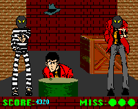

Lupin 3rd - On-line Games

Good Marksman? requires the
Shockwave plug-in for your web browser. The object of the game is to
rack up points by shooting any masked person in the game or any of the bonus items that fly across the screen. You have three lives and
lose a life if you are shot or shoot Lupin, Jigen, or Goemon. Be careful! The villians will disguise themselves as Lupin and his gang but are
still easily spotted by the mask they wear. Bonus items are worth various amounts of points and consist of Jigen's hat or a hamburger.
Anime Video Game Resource Center © 1998 by Luis A. Cruz